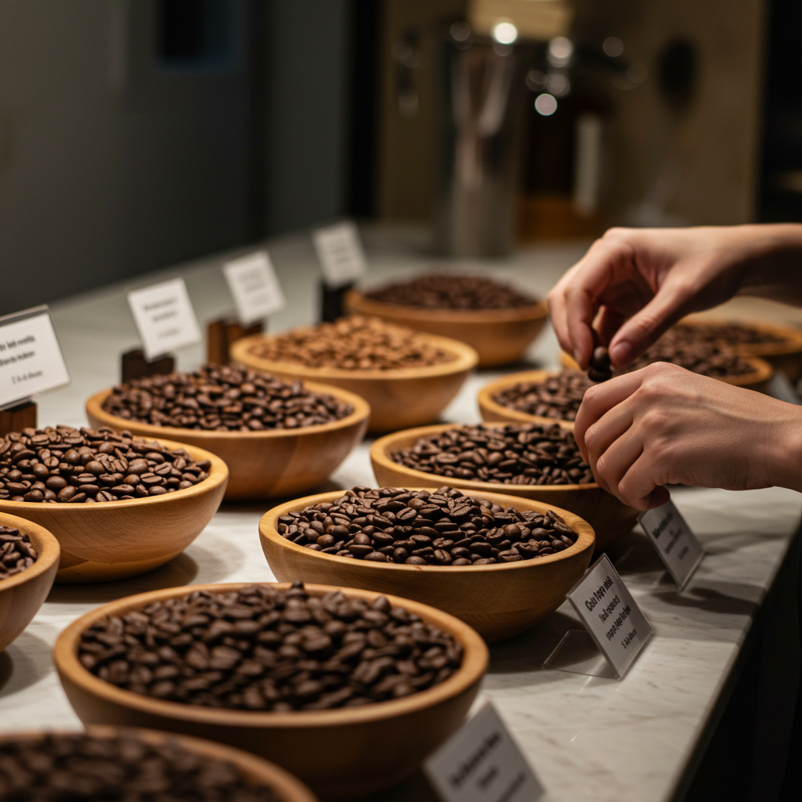
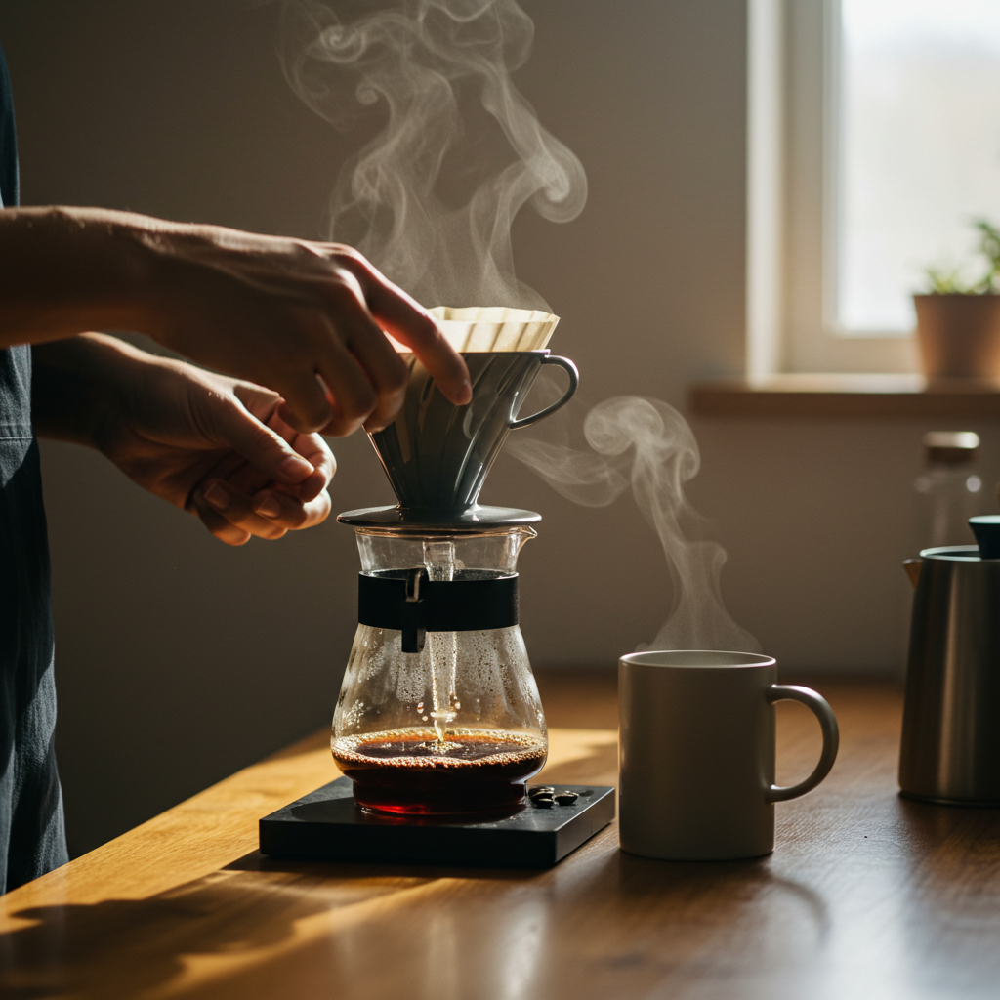
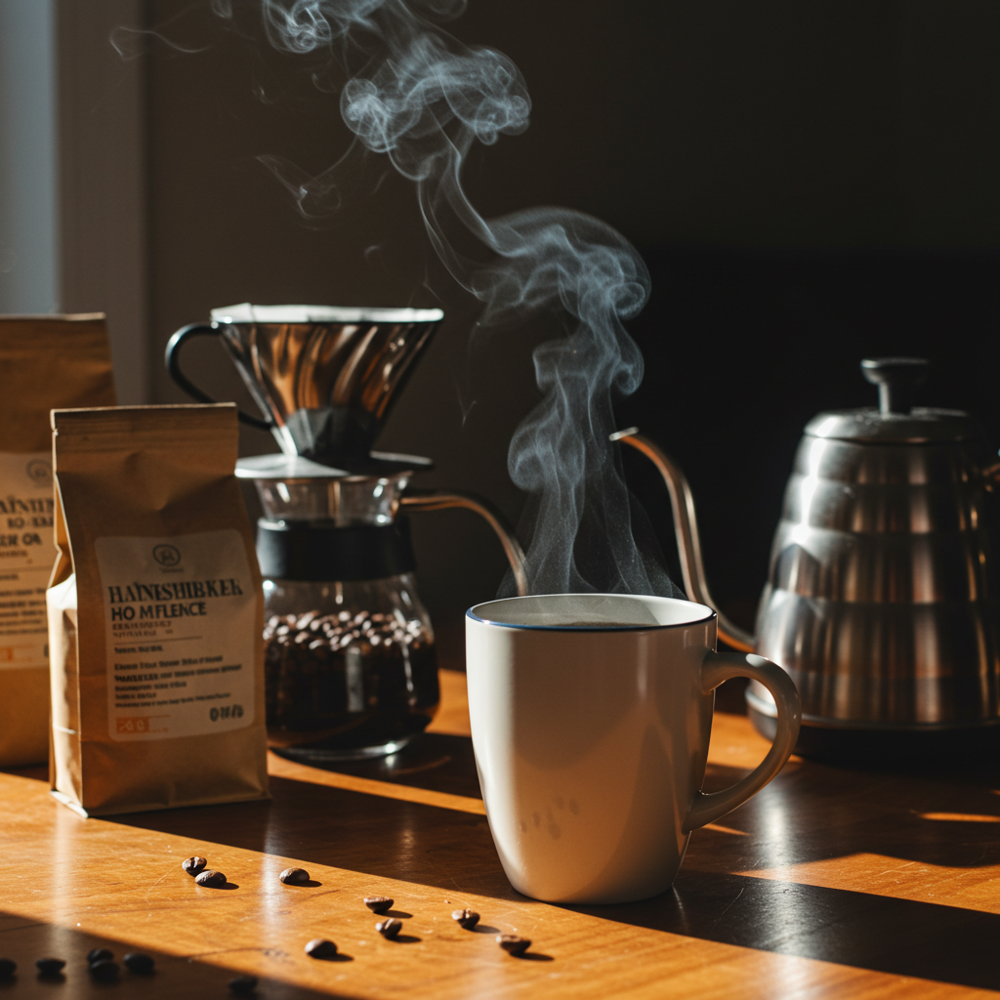
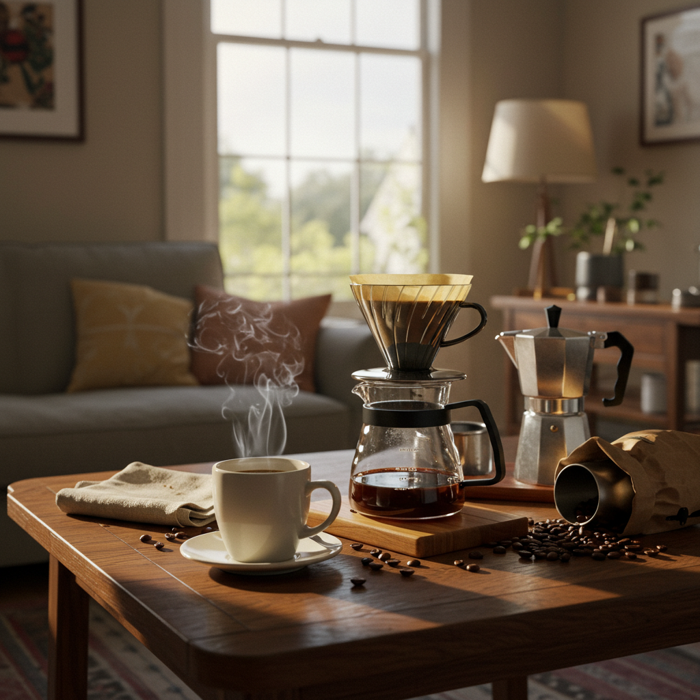

良いコーヒーを自宅で楽しむ！失敗しない豆選びから美味しい淹れ方まで

導入
ふと立ち寄ったカフェで出会った、香り高い一杯のコーヒー。その深い味わいと心地よい余韻に、心がほっと温かくなった経験はありませんか？忙しい日常の中で、そんな特別な時間を毎日過ごせたら、どんなに素敵だろう。そんな風に思ったことがある方も、きっと少なくないはずです。
「でも、自宅で美味しいコーヒーを淹れるなんて、なんだか難しそう…」
「どんな豆を選べばいいのかわからないし、特別な器具も必要なのでは？」
そんな風に感じて、一歩を踏み出せずにいるかもしれません。確かに、コーヒーの世界はとても奥深く、知れば知るほどその魅力の虜になる一方で、どこから手をつけていいのか迷ってしまうこともあります。
しかし、ご安心ください。自宅で楽しむコーヒーは、決して専門家だけのものではありません。いくつかの大切なポイントさえ押さえれば、誰でも驚くほど美味しいコーヒーを淹れることができるのです。それはまるで、自分だけの特別なカフェをオープンするような、心躍る体験の始まりです。
この記事では、そんな「おうちコーヒー」の世界へ、あなたを優しくご案内します。まずは、すべての基本となる「コーヒー豆の選び方」から。数ある豆の中から、あなたの好みにぴったりの一杯を見つけるための羅針盤となる知識を、丁寧にお伝えします。そして、選んだ豆の魅力を最大限に引き出すための「美味しい淹れ方」。準備する器具から、豆を挽くタイミング、お湯の温度まで、一つひとつの工程に込められた意味を解き明かしていきます。
もちろん、良いことばかりではありません。自宅でコーヒーを淹れることのメリットだけでなく、デメリットについても正直にお話しします。その上で、あなたが「やってみたい」と思えるかどうか、じっくりと考えるきっかけになれば幸いです。
この記事を読み終える頃には、きっとあなたの心の中に、コーヒーの豊かな香りがふわりと立ち上っているはず。そして、「明日の朝は、自分でコーヒーを淹れてみようかな」と、小さなワクワクが芽生えていることでしょう。さあ、一緒に、あなただけの一杯を見つける、素晴らしい旅に出かけましょう。
失敗しないコーヒー豆の選び方

美味しいコーヒーへの旅は、すべて「豆選び」から始まります。スーパーマーケットや専門店にずらりと並んだコーヒー豆の袋を前に、どれを選べば良いのか途方に暮れてしまった経験はありませんか？パッケージに書かれた「モカ」や「キリマンジャロ」、「シティロースト」といった言葉の意味がわからず、結局いつも同じものを選んでしまう…という方も多いかもしれません。
しかし、この豆選びこそが、自宅で楽しむコーヒーの醍醐味であり、最も重要なステップなのです。自分の好みを理解し、豆の個性を知ることで、コーヒーの世界は無限に広がっていきます。ここでは、星の数ほどあるコーヒー豆の中から、あなたの「運命の一杯」を見つけ出すための、3つの大切な羅針盤をご紹介します。この3つのポイントを押さえれば、もう豆選びで失敗することはありません。さあ、一緒にあなただけの宝物を探しに行きましょう。
選び方１．豆の種類と特徴を理解する
まず最初に知っておきたいのが、コーヒー豆そのものの「種類」や「産地」による違いです。私たちが普段飲んでいるコーヒーは、主に「アラビカ種」と「ロブスタ種（カネフォラ種）」という2つの大きな品種に分けられます。そして、それらがどの国で、どのような環境で育ち、どのように加工されたかによって、驚くほど多様な個性を持つようになります。
アラビカ種とロブスタ種：コーヒー界の二大巨頭
- アラビカ種 (Arabica)
現在、世界で生産されているコーヒーの約60%以上を占めるのが、このアラビカ種です。エチオピアが原産とされ、繊細で病害虫に弱く、標高の高い涼しい気候でしか栽培できないため、手間暇がかかる高級な品種として知られています。
その最大の特徴は、豊かで複雑な香りと、きれいな酸味、そして心地よい甘みです。まるでワインのように、フルーティーな香りやフローラルな香り、ナッツのような香ばしさなど、実に多彩なフレーバープロファイルを持っています。私たちがスペシャルティコーヒーのカフェなどで楽しむ、個性豊かなコーヒーのほとんどがこのアラビカ種です。カフェインの含有量はロブスタ種に比べて少ないのも特徴です。自宅でじっくりとコーヒーの香りや味わいの変化を楽しみたい、という方には、まずこのアラビカ種から試してみることを強くお勧めします。 - ロブスタ種 (Robusta / Canephora)
その名の通り「ロバスト（頑丈な）」な性質を持つ品種で、病害虫に強く、高温多湿な低地でも栽培が可能です。そのため、アラビカ種に比べて生産性が高く、価格も比較的安価です。
味わいの特徴は、ガツンとくる力強い苦味と、麦茶のような独特の香ばしさ。アラビカ種のような華やかな酸味や香りは控えめですが、ボディ（コク）が非常に強く、パンチのある味わいです。また、カフェインの含有量がアラビカ種の2倍以上あることも大きな特徴です。
その個性から、単一で飲まれることは比較的少なく、主にインスタントコーヒーや缶コーヒーの原料、あるいはエスプレッソのブレンドに少量加えられ、豊かなクレマ（泡）と力強いコクを生み出すために使われることが多いです。力強い苦味が好き、眠気覚ましにガツンと効くコーヒーが飲みたい、という方には選択肢の一つとなるでしょう。
産地が織りなす、味のテロワール
ワインの世界で「テロワール（土壌や気候などの生育環境）」が重要視されるように、コーヒーもまた、育った土地の個性を色濃く反映します。ここでは、代表的な生産国の特徴をいくつかご紹介しましょう。これを参考に、まるで世界地図を旅するように、様々な産地のコーヒーを試してみてはいかがでしょうか。
- ブラジル：ナッツのような香ばしさと、穏やかなバランス
世界最大のコーヒー生産国であるブラジル。その味わいは、ナッツやチョコレートを思わせる香ばしいフレーバーと、穏やかな酸味、そしてしっかりとした甘みが特徴です。突出した個性は少ないものの、全体のバランスが非常に良く、誰にでも飲みやすいマイルドな味わいは「コーヒーの優等生」とも言えます。朝の一杯や、毎日飲む定番のコーヒーを探している方にぴったりです。 - コロンビア：マイルドなコクと、甘い香り
ブラジルに次ぐ生産量を誇るコロンビア。「コロンビア・マイルド」という言葉があるように、その名の通り非常にマイルドでバランスの取れた味わいが特徴です。しかし、ただマイルドなだけではありません。キャラメルやオレンジを思わせるような甘い香りと、しっかりとしたコク、そして後味に心地よい酸味が感じられます。ブラジルよりも少しだけ華やかさが欲しい、という方におすすめです。 - エチオピア：紅茶やベリーを思わせる、華やかな香り
コーヒー発祥の地とされるエチオピア。ここのコーヒーは、他のどの産地とも一線を画す、非常に個性的で華やかな香りを持ちます。まるでフルーツティーや紅茶のようなフローラルなアロマ、ストロベリーやブルーベリーのような甘酸っぱい果実の風味は、一度体験すると忘れられないインパクトです。「これが本当にコーヒーなの？」と驚く人も少なくありません。コーヒーの概念を覆すような、新しい体験を求める方にぜひ試していただきたい逸品です。 - グアテマラ：芳醇な香りと、上質な酸味
火山に囲まれた豊かな土壌で育つグアテマラのコーヒーは、スモーキーで芳醇な香りと、リンゴや柑橘類を思わせるような、明るく上質な酸味が特徴です。しっかりとしたコクと甘みもあり、複雑で奥行きのある味わいを楽しむことができます。少し大人びた、洗練された味わいを好む方に人気があります。 - インドネシア（マンデリン）：大地を思わせる、重厚なコクと苦味
スマトラ島で生産される「マンデリン」が特に有名なインドネシア。その味わいは、ハーブやスパイス、そして湿った大地を思わせるような、独特でエキゾチックな香りが特徴です。酸味は非常に穏やかで、どっしりとした重厚なコクと、長く続く心地よい苦味を楽しむことができます。ミルクとの相性も抜群で、カフェオレやカフェラテにするのもおすすめです。力強く、個性的な味わいが好きな方にはたまらない一杯となるでしょう。
これらの特徴はあくまで一般的な傾向です。同じ国の中でも、農園や精製方法（収穫したコーヒーチェリーから生豆を取り出す工程）によって味わいは大きく変わります。ぜひ、色々な国のコーヒーを試してみて、あなたのお気に入りの「故郷」を見つけてみてください。
選び方２．焙煎度合いで味の好みを決める
コーヒー豆選びのもう一つの大きな柱が「焙煎度合い」です。コーヒー豆は、もともとは淡い緑色をした「生豆（きまめ）」の状態です。この生豆を加熱（焙煎、ロースト）することで、私たちがよく知る茶色いコーヒー豆になり、独特の香りや味わいが生まれます。
この焙煎の度合いをどのくらいにするかによって、コーヒーの味わいは劇的に変化します。同じ生豆を使っても、焙煎が浅ければ酸味が際立ち、深くすれば苦味が強くなります。つまり、自分の好みに合った焙煎度合いを知ることが、理想の一杯にたどり着くための重要な鍵となるのです。焙煎度合いは、一般的に「浅煎り」「中煎り」「深煎り」の3つに大別され、さらに細かく8段階ほどに分類されます。
浅煎り (Light Roast / Cinnamon Roast)：素材の個性を楽しむ
- 見た目と特徴
焙煎時間が短く、豆の色は明るいシナモン色をしています。豆の表面に油は浮いておらず、カラッとした見た目です。 - 味わい
苦味はほとんど感じられず、フルーティーで華やかな酸味が主役となります。レモンやオレンジのような柑橘系の酸味や、ベリー系の甘酸っぱさなど、その豆が本来持っている「素材の個性」が最もストレートに表現されます。香りはフローラルで爽やか、後味もすっきりと軽やかです。 - どんな人におすすめ？
紅茶のような感覚で、コーヒーの華やかな香りや果実感を楽しみたい方。苦いコーヒーが苦手な方。エチオピアやケニアなど、特徴的な酸味を持つスペシャルティコーヒーの個性を最大限に味わいたい方におすすめです。最近のサードウェーブコーヒーの流行もあり、この浅煎りの人気が非常に高まっています。
中煎り (Medium Roast / City Roast)：バランスの取れた優等生
- 見た目と特徴
日本で最もポピュラーな焙煎度合いで、多くのカフェや家庭で親しまれています。豆の色は栗色やチョコレートブラウンで、まだ表面に油はほとんど見られません。 - 味わい
酸味と苦味のバランスが最も良いのが特徴です。浅煎りのような華やかな酸味は少し穏やかになり、代わりにカラメルのような香ばしさや、まろやかな甘み、そして心地よい苦味が出てきます。酸味、甘み、苦味、コクのすべてが程よく調和しており、非常に飲みやすい味わいです。 - どんな人におすすめ？
まずは基準となるバランスの取れたコーヒーを味わってみたいという初心者の方。酸味も苦味もどちらも楽しみたいという方。ブラジルやコロンビアなど、バランス系の豆の良さを引き出すのに最適な焙煎度合いです。迷ったら、まずはこの中煎りから試してみるのが良いでしょう。
深煎り (Dark Roast / French Roast)：重厚なコクとビターな魅力
- 見た目と特徴
焙煎時間が長く、豆の色は黒に近いダークブラウン。豆の組織が破壊され、内部の油分が表面に染み出して、ツヤツヤと黒光りしているのが特徴です。 - 味わい
豆本来の酸味はほとんど感じられなくなり、代わりに力強い苦味と、どっしりとした重厚なコクが前面に出てきます。スモーキーな香りや、ビターチョコレートのような濃厚な風味が特徴で、長く続く余韻を楽しむことができます。 - どんな人におすすめ？
ガツンとくる苦味やパンチのある味わいが好きな方。眠気を覚ましたい朝の一杯や、食後のデザートと一緒に楽しみたい方。ミルクや砂糖との相性が抜群なので、カフェオレやアイスコーヒーにして飲むのが好きな方にもおすすめです。インドネシアのマンデリンや、ブレンドコーヒーによく用いられる焙煎度合いです。
このように、焙煎度合いはコーヒーの味わいを決定づける非常に重要な要素です。もしあなたが「酸っぱいコーヒーは苦手」と感じているなら、それは浅煎りのコーヒーを飲んだからかもしれません。逆に「苦いだけで美味しくない」と感じるなら、深煎りすぎたのかもしれません。
ぜひ、コーヒー豆を購入する際には、「産地」だけでなく「焙煎度合い」にも注目してみてください。同じ「エチオピア」の豆でも、浅煎りなら紅茶のよう、中煎りならバランスの取れた味わい、深煎りなら濃厚なコクと、全く違う表情を見せてくれます。自分の好みの焙煎度合いを見つけることが、コーヒーライフを何倍も豊かにしてくれるはずです。
選び方３．鮮度の見極め方
美味しいコーヒーを淹れるための最後の、そして非常に重要な要素が「鮮度」です。野菜やお肉、魚に新鮮さが求められるのと同じように、コーヒー豆もまた「生鮮食品」であるという認識を持つことが大切です。どれだけ高品質な豆を、完璧な焙煎度合いで仕上げたとしても、その鮮度が失われてしまっていては、本来の魅力は半減してしまいます。
なぜ鮮度が重要なのか？
コーヒー豆は、焙煎された直後から、その香りや味わいの劣化が始まります。主な原因は「酸化」です。焙煎された豆は、空気中の酸素に触れることで酸化が進み、心地よい香りや風味が失われ、代わりに油が劣化したような不快な酸味や、渋み、えぐみが出てきてしまいます。また、コーヒーの魅力である豊かな香りの成分は非常に揮発しやすく、時間が経つにつれてどんどん空気中に逃げていってしまうのです。
特に、豆を粉に挽いた状態では、空気に触れる表面積が何百倍にも増えるため、劣化のスピードは劇的に早まります。スーパーなどで売られている挽き豆の多くは、残念ながら店頭に並んだ時点で、すでに最高の状態を過ぎてしまっていることが多いのが実情です。
鮮度の良い豆の見分け方
では、どうすれば鮮度の良い豆を見分けることができるのでしょうか。いくつかのポイントをご紹介します。
- 「焙煎日」が明記されているか
これが最も確実で重要なチェックポイントです。コーヒー豆の美味しさのピークは、一般的に焙煎後3日〜2週間程度と言われています（豆の種類や焙煎度合いによって多少異なります）。「賞味期限」ではなく、いつ焙煎されたかを示す「焙煎日」がきちんと記載されている豆を選びましょう。自家焙煎を行っている専門店であれば、ほとんどの場合、焙煎日が明記されています。もし記載がなければ、お店の人に尋ねてみましょう。焙煎日から1ヶ月以上経過しているものは避けるのが賢明です。 - 豆の見た目と香り
豆の状態で販売されている場合は、その見た目もヒントになります。鮮度の良い豆は、ふっくらとしていて、ハリとツヤがあります。特に深煎りの豆は、表面にキラキラとした油分が浮き出ていますが、これがベタベタと古くなった油のようになっていたり、色がくすんでいたりするものは鮮度が落ちている可能性があります。
また、袋を開けた瞬間に、豊かで甘い香りが広がるかどうかも大切なポイントです。香りが弱かったり、古紙のような匂いがしたりする場合は、劣化が進んでいるサインです。 - 抽出時のお湯を注いだ時の「膨らみ」
鮮度の良い豆の最も分かりやすい証拠が、お湯を注いだ時の反応です。焙煎された豆には、たくさんの二酸化炭素が含まれています。新鮮な豆にお湯を注ぐと、このガスが一気に放出され、ハンバーグを焼く時のように、粉がもこもことドーム状に膨らみます。この「コーヒーの膨らみ」は、豆が新鮮であることの何よりの証拠です。もし、お湯を注いでも全く膨らまなかったり、すぐにぺしゃんこになってしまったりする場合は、その豆は鮮度がかなり落ちていると言えるでしょう。
鮮度を保つための正しい保存方法
せっかく手に入れた新鮮なコーヒー豆も、保存方法を間違えるとすぐに劣化してしまいます。コーヒー豆の敵は「酸素」「光」「高温」「湿度」の4つです。これらを避けることが、美味しさを長持ちさせる秘訣です。
- 基本は「密閉容器」で「冷暗所」に
最も基本的な保存方法は、光を通さない、気密性の高いキャニスター（保存容器）に入れ、直射日光が当たらず、温度変化の少ない涼しい場所（冷暗所）で保管することです。ガス抜きバルブが付いた専用の袋に入っている場合は、そのままクリップなどでしっかりと口を閉じて保存しても良いでしょう。 - 冷蔵庫での保存は避けるべき
冷蔵庫は温度が低くて良いように思えますが、実はコーヒー豆の保存にはあまり適していません。出し入れする際の温度変化で結露が発生し、豆が湿気ってしまう原因になります。また、冷蔵庫内の他の食品の匂いを吸収しやすいというデメリットもあります。 - 長期保存なら「冷凍庫」が有効
もし豆を2週間〜1ヶ月以上かけて消費する場合は、冷凍庫での保存が有効です。ただし、ここでも注意が必要です。豆を小分けにして、密閉性の高い袋や容器に入れ、使う分だけを取り出すようにしましょう。冷凍庫から出した豆は、常温に戻さず、凍ったまま挽いて、すぐに抽出するのがポイントです。一度解凍した豆を再冷凍するのは、品質を著しく損なうため絶対にやめましょう。
豆の種類、焙煎度合い、そして鮮度。この3つのポイントを意識するだけで、あなたのコーヒー選びは格段にレベルアップし、失敗する確率はぐっと低くなるはずです。最初は難しく感じるかもしれませんが、色々な豆を試すうちに、きっと自分の好みがはっきりと見えてくるでしょう。それこそが、おうちコーヒーの最も楽しく、奥深い魅力なのです。
美味しいコーヒーを淹れる作業の流れ

自分好みのコーヒー豆を見つけたら、いよいよ次はその豆の持つポテンシャルを最大限に引き出す「抽出」のステップです。同じ豆を使っても、淹れ方ひとつでその味わいは驚くほど変わります。酸味が強く出たり、逆に苦味が際立ったり、あるいは水っぽく物足りない味になったり…。それはまるで、素晴らしい食材を前にした料理人の腕の見せ所のようなものです。
しかし、これも決して難しく考える必要はありません。いくつかの基本的なルールと流れを理解し、丁寧に作業を行うことで、誰でも安定して美味しいコーヒーを淹れることができるようになります。ここでは、最もポピュラーな「ハンドドリップ」を例に、美味しいコーヒーを淹れるための3つのステップを、順を追って詳しく解説していきます。この流れをマスターすれば、あなたのおうち時間が、特別なカフェタイムへと変わるはずです。
流れ１．適切な器具の準備
美味しいコーヒーを淹れるためには、まず適切な「道具」を揃えることが大切です。高価なものである必要はありませんが、それぞれの器具が持つ役割を理解し、自分に合ったものを選ぶことで、抽出のプロセスがより楽しく、そして安定したものになります。ここでは、ハンドドリップに最低限必要な基本的な器具をご紹介します。
- ドリッパー
コーヒーの粉を入れ、お湯を注ぐための器具で、ハンドドリップの心臓部とも言える存在です。材質（陶器、プラスチック、金属など）や形状によって、お湯の落ちるスピードや温度の保ち方が変わり、それが味わいの違いに繋がります。代表的なものをいくつかご紹介しましょう。- カリタ式（台形・3つ穴）：底が台形で、穴が3つ空いているのが特徴。お湯がドリッパー内に溜まりにくく、比較的すっきりと雑味の少ない味わいになりやすいです。誰が淹れても味のブレが少なく、初心者の方にも扱いやすい定番のドリッパーです。
- メリタ式（台形・1つ穴）：カリタと同じ台形ですが、穴が1つだけなのが特徴。お湯を一度に注ぐだけで、最適な抽出時間になるように設計されています。手間をかけずに安定した味を出したい方におすすめです。
- ハリオV60（円錐形・1つ穴）：円錐形で、内側に螺旋状のリブ（溝）があり、底に大きな穴が1つ空いているのが特徴。お湯を注ぐスピードによって、お湯が抜ける速さをコントロールできるため、すっきりとした味わいから、しっかりとしたコクのある味わいまで、淹れ手の技術次第で多彩な表現が可能です。コーヒーの抽出をより深く探求したい、中級者以上の方に人気があります。
- ペーパーフィルター
ドリッパーにセットして使う、紙製のフィルターです。コーヒーの微粉や油分を適度に取り除き、クリアで雑味のない味わいを生み出します。ドリッパーの形状に合った専用のもの（台形用、円錐用）を選びましょう。最近では、環境に配慮した無漂白（茶色）のものと、紙の匂いが少ないとされる漂白（白色）のものがあります。どちらを使うかは好みですが、使用前にお湯で軽くリンス（湯通し）をすると、紙の匂いをより効果的に取り除くことができます。 - サーバー
抽出されたコーヒーを受けるためのガラスやステンレス製のポットです。抽出量が一目でわかる目盛りがついているものが多く、便利です。ドリッパーを直接マグカップに乗せて淹れることも可能ですが、サーバーを使うことで、複数人分を一度に淹れたり、抽出後のコーヒーの濃度を均一にしたりすることができます。 - コーヒーミル（グラインダー）
コーヒー豆を粉砕するための器具です。前述の通り、コーヒーは粉にすると劣化が早まるため、淹れる直前に豆を挽くのが美味しさの絶対条件。ミルは、そのための必須アイテムと言えます。- 手挽きミル：ゴリゴリという音と、挽きたての豆の香りを楽しみながら、ゆっくりと時間をかけてコーヒーを淹れたい方におすすめ。比較的手頃な価格で手に入りますが、一度に挽ける量が少なく、粒度の均一性では電動に劣る場合があります。
- 電動ミル：スイッチひとつで、素早く均一に豆を挽くことができます。忙しい朝でも手軽に挽きたてのコーヒーを楽しみたい方に最適です。プロペラ式、臼式（コニカル刃、フラット刃）など様々なタイプがあり、価格も様々ですが、粒度の均一性を求めるなら、少し高価でも臼式のものを選ぶことをお勧めします。
- ドリップケトル（ドリップポット）
お湯を注ぐための、注ぎ口が細長いケトルです。普通のやかんでもお湯は沸かせますが、このドリップケトルを使うことで、お湯の量や注ぐスピードを繊細にコントロールすることができます。狙った場所に、細く、静かにお湯を注ぐことが、美味しいハンドドリップの鍵となります。ステンレス製やホーロー製など、デザインも豊富なので、お気に入りの一つを見つけるのも楽しいでしょう。 - スケール（はかり）とタイマー
最後に、意外と見落とされがちですが、安定して美味しいコーヒーを淹れるために非常に重要なのが、この2つです。コーヒーの抽出は「豆の量」「お湯の量」「抽出時間」のバランスで味が決まります。毎回同じ味を再現するためには、これらを感覚ではなく、きちんと数値で管理することが不可欠です。0.1g単位で計れるデジタルのキッチンスケールと、タイマー（スマートフォンのアプリでも可）を準備しましょう。最近では、タイマー機能が一体化したコーヒー専用のスケールも人気です。
これらの器具を一つひとつ揃えていく過程も、おうちコーヒーの楽しみの一つです。まずは手頃なものから始めて、徐々に自分のスタイルに合ったこだわりの道具にアップグレードしていくのも良いでしょう。
流れ２．豆を挽くタイミングと粒度
準備が整ったら、次はいよいよ豆を挽きます。この「豆を挽く」という工程は、単なる作業ではなく、コーヒーの香りを解き放ち、味わいを決定づけるための重要な儀式です。
なぜ「淹れる直前」に挽くのか？
何度か触れてきましたが、これは美味しいコーヒーを淹れる上での「絶対のルール」です。コーヒー豆は、焙煎されることで内部に多孔質の空間ができ、そこに豊かな香りの成分が閉じ込められています。豆を挽くという行為は、この細胞壁を破壊し、香りの成分を解放する作業です。しかし、解放された香りは非常に揮発しやすく、同時に空気に触れる表面積が爆発的に増えることで、酸化による劣化も一気に加速します。
例えるなら、コーヒー豆は香りの宝石箱のようなもの。挽きたてというのは、その宝石箱を開けたばかりの、最も輝きと香りが満ち溢れている瞬間なのです。スーパーで売られている挽き豆は、すでに蓋が開けっ放しにされた宝石箱のようなもの。時間が経つにつれて、その輝きと香りは失われていってしまいます。この最も美味しい瞬間を逃さないために、コーヒーは必ず「淹れる直前」に、必要な分だけ挽くようにしましょう。手挽きのミルで豆を挽くと、部屋中に広がる甘く香ばしいアロマに、きっと心癒されるはずです。
味を左右する「粒度（メッシュ）」の調整
豆を挽く際に、もう一つ非常に重要なのが「粒度（りゅうど、またはメッシュ）」、つまり粉の粗さです。この粒度が、お湯とコーヒー粉が接触する時間や効率を左右し、最終的な味わいを大きくコントロールします。
- 細挽き (Fine Grind)
- 目安：グラニュー糖くらいの細かさ。
- 特徴：粉の表面積が大きいため、お湯と接触する面積が広くなり、コーヒーの成分が短時間でたくさん抽出されます。お湯の通り道が狭くなるため、抽出に時間がかかります。
- 味わい：苦味やコクが強く、しっかりとした濃厚な味わいになります。しかし、抽出時間が長くなりすぎると、雑味やえぐみといった余分な成分まで出てしまう「過抽出」になりやすいので注意が必要です。エスプレッソや水出しコーヒーに適しています。
- 中挽き (Medium Grind)
- 目安：ザラメ糖くらいの粗さ。
- 特徴：細挽きと粗挽きの中間で、最もバランスの取れた粒度です。
- 味わい：酸味、甘み、苦味のバランスが良く、クリアな味わいになりやすいです。ペーパードリップやサイフォンなど、多くの抽出方法で基準とされる粒度で、迷ったらまずはこの中挽きから試してみるのが良いでしょう。
- 粗挽き (Coarse Grind)
- 目安：ゴマ粒や岩塩くらいの粗さ。
- 特徴：粉の粒が大きく、隙間も大きいため、お湯がスピーディーに通り抜けます。成分の抽出は比較的穏やかになります。
- 味わい：苦味や雑味が出にくく、すっきりと軽やかで、酸味が際立った味わいになります。しかし、抽出時間が短すぎると、コーヒーの美味しい成分を十分に引き出せない「未抽出」となり、水っぽく物足りない味になることがあります。フレンチプレスやパーコレーターなどに適した粒度です。
このように、粒度は抽出器具との相性も深く関係しています。ペーパードリップの場合、基本は「中挽き」ですが、例えば「もっとコクと苦味を出したいな」と感じたら少し細かく、「すっきりさせたいな」と思ったら少し粗くしてみる、といったように、自分の好みに合わせて微調整することで、味わいを自在にコントロールすることができます。この粒度の探求も、コーヒーの奥深い世界の入り口です。
流れ３．抽出温度と時間の調整
いよいよ、お湯を注いでコーヒーを抽出するクライマックスです。ここでは「お湯の温度」と「抽出時間」という2つの要素が、最終的な味の仕上がりを決定づけます。レシピ通りに丁寧に行うことで、驚くほど安定して美味しいコーヒーが淹れられるようになります。
お湯の温度が味を作る
お湯の温度は、コーヒーの成分がどれだけ溶け出すかに直接影響します。
- 高温（95℃以上）：コーヒーの成分がたくさん溶け出します。特に苦味成分が抽出されやすくなるため、キリッとした苦味や、しっかりとしたコクのある味わいになります。しかし、高すぎると雑味やえぐみまで出てしまい、刺激的な味になることがあります。深煎りの豆を使い、力強い味わいにしたい場合に適しています。
- 低温（85℃以下）：コーヒーの成分は穏やかに溶け出します。苦味や雑味が出にくくなる一方で、酸味や甘みが際立ちやすくなります。まろやかで、クリーンな味わいになりますが、低すぎると未抽出となり、物足りない味になることも。浅煎りの豆のフルーティーな酸味をきれいに引き出したい場合に適しています。
一般的に、ハンドドリップの適温は90℃前後と言われています。沸騰したてのお湯（100℃）をドリップケトルに移し替え、30秒〜1分ほど待つと、ちょうど良い温度になります。温度計があればより正確ですが、なければこの方法でも十分です。まずは90℃を基準に、豆の種類や好みに合わせて「今日は少し高めにしてみよう」「次は少し低めに」と試してみると、味の変化が楽しめて面白いですよ。
抽出時間と「蒸らし」の重要性
抽出時間は、豆の量やお湯の量によって変わりますが、一般的に1杯分（約150ml）で2分半〜3分程度が目安です。この時間をコントロールする上で、最も重要な工程が最初の「蒸らし」です。
ハンドドリップの基本的な流れ（1杯分の例）
- 準備：ドリッパーにペーパーフィルターをセットし、一度お湯をかけてリンス（湯通し）します。これにより、紙の匂いを取り除き、器具を温めることができます。サーバーに溜まったお湯は捨てます。
- 粉をセット：中挽きにしたコーヒー粉（約12〜15g）をドリッパーに入れ、軽く揺すって表面を平らにならします。
- 蒸らし（30秒）：タイマーをスタートさせ、粉の中心から「の」の字を描くように、粉全体が湿る程度のお湯（約30ml）を、そっと乗せるように注ぎます。ここでお湯を勢いよく注がないのがポイントです。新鮮な豆であれば、この蒸らしの工程で粉がもこもこと膨らみ、豊かな香りが立ち上ります。この「蒸らし」は、コーヒーの成分を効率よく抽出するための準備運動のようなものです。ここで30秒ほど待ちます。
- 抽出（2分〜2分半）：30秒経ったら、抽出を開始します。中心から円を描くように、数回（3〜5回程度）に分けてお湯を注いでいきます。この時、フィルターの縁に直接お湯をかけないように注意しましょう。お湯がフィルターの壁を伝って、コーヒー粉を通らずに下に落ちてしまう「湯抜け」を防ぐためです。注ぐお湯の太さやスピードを一定に保つことを意識します。
- 完了：サーバーの目盛りが目的の抽出量（約150ml）に達したら、ドリッパーにお湯が残っていても、サーバーから外します。最後まで抽出しようとすると、後半に出てくる雑味やえぐみまで落ちてしまうためです。タイマーが2分半〜3分程度になっているか確認しましょう。
- 撹拌：サーバーを軽く揺すり、中のコーヒーの濃度を均一にしてから、温めておいたカップに注いで完成です。
この一連の流れを、焦らず、丁寧に行うことが大切です。豆を挽く音、立ち上る香り、お湯を注ぐ時の集中力。そのすべてが、最高の一杯を淹れるための大切な要素であり、心を落ち着かせる豊かな時間となるでしょう。
自宅でコーヒーを淹れるメリット

ここまで、豆の選び方から淹れ方まで、少し専門的な内容をお伝えしてきました。「なんだか、やっぱり大変そう…」と感じた方もいるかもしれません。しかし、その少しの手間を乗り越えた先には、カフェで飲むコーヒーとはまた違った、格別な喜びと多くのメリットが待っています。なぜ多くの人が、時間と手間をかけてまで自宅でコーヒーを淹れることに魅了されるのでしょうか。ここでは、その代表的な3つのメリットをご紹介します。
メリット１．コストパフォーマンスの向上
まず、非常に現実的で分かりやすいメリットが、経済的な側面にあります。毎日、あるいは週に何回かカフェでコーヒーを飲む習慣がある方なら、その効果は絶大です。
例えば、カフェで飲むコーヒーが一杯500円だとしましょう。もし平日の5日間、毎日一杯飲むとすると、一週間で2,500円、一ヶ月（4週間）で10,000円、一年間では実に120,000円もの出費になります。これは決して小さな金額ではありません。
一方、自宅でコーヒーを淹れる場合はどうでしょうか。コーヒー豆の価格は様々ですが、例えばスペシャルティコーヒーの専門店で、100gあたり800円の豆を購入したとします。一杯あたりに使う豆の量を12gとすると、この豆で約8杯のコーヒーを淹れることができます。つまり、一杯あたりの豆のコストは、わずか100円です。ペーパーフィルターなどの消耗品費を加えても、一杯110円程度でしょう。
もちろん、最初にミルやドリッパー、ケトルといった器具を揃えるための初期投資は必要です。しかし、一度揃えてしまえば長く使えるものがほとんどです。仮に初期投資に10,000円かかったとしても、カフェで飲む場合との差額は一杯あたり約390円。わずか26杯、つまり1ヶ月も経たないうちに元が取れてしまう計算になります。
その後は、飲むたびにその差額がまるごと節約に繋がります。年間で考えれば、10万円以上の節約になる可能性も十分にあります。この浮いたお金で、少し贅沢なディナーに出かけたり、新しい趣味を始めたり、あるいはもっと高品質で希少なコーヒー豆に挑戦してみたり…と、生活に新たな潤いをもたらすことができるのです。
しかも、コストが安いからといって、味が劣るわけではありません。むしろ、新鮮で高品質な豆を選び、丁寧にハンドドリップすれば、多くのカフェで提供されるコーヒーよりも格段に美味しい一杯を、わずか100円程度で毎日楽しむことができるのです。これは、自宅でコーヒーを淹れることの、計り知れない大きな魅力と言えるでしょう。
メリット２．自分好みの味を追求できる
カフェでコーヒーを注文する時、「今日のコーヒーは、もう少し苦味が強い方が良かったな」「もっとフルーティーな香りのものが飲みたかった」などと感じたことはありませんか？カフェでは、そのお店が提供する味の中から選ぶしかありませんが、自宅ならば、あなたはバリスタであり、同時に最高のお客様でもあります。すべてを自分の思い通りに、完璧にコントロールすることができるのです。
この「自分好みの味を無限に追求できる」ことこそ、おうちコーヒーの最大の醍醐味かもしれません。
- 豆の選択は自由自在
世界中には、数え切れないほどの種類のコーヒー豆が存在します。エチオピアの華やかな酸味、ブラジルのナッツ感、マンデリンの重厚なコク。まずは色々な産地の豆を試して、自分の好きな方向性を見つける旅に出ることができます。さらに、同じ産地でも農園が違えば味は変わりますし、希少な「ゲイシャ種」のような特別な品種に挑戦することも可能です。インターネットを使えば、世界中のロースターから、焙煎したての新鮮な豆を取り寄せることもできます。 - 焙煎度合いも思いのまま
「この豆のフルーティーさを最大限に楽しみたいから、浅煎りで」
「今日はミルクと合わせたいから、しっかり深煎りの豆を選ぼう」
そんな風に、その日の気分や飲み方に合わせて焙煎度合いを選ぶことができます。同じ豆でも焙煎が違うだけで全く別の飲み物のように感じる体験は、非常に刺激的です。 - 挽き方、淹れ方で味をチューニング
豆を選んだ後も、探求は続きます。
「少し味が薄いな。次はもう少し豆の量を増やして、挽き方を細かくしてみよう」
「酸味が立ちすぎているから、お湯の温度を少し下げて、抽出時間を短くしてみようか」
このように、挽き目の粗さ、豆の量、お湯の温度、抽出時間といった変数を一つひとつ調整し、試行錯誤を繰り返すことで、自分の舌が「これだ！」と喜ぶ、完璧な一杯に少しずつ近づいていくことができます。このプロセスは、まるで科学の実験のようでもあり、あるいはパズルを解くような知的な楽しさに満ちています。
自分の手で淹れたコーヒーが、昨日よりも今日、今日よりも明日と、どんどん美味しくなっていく。その成長を実感できた時の喜びは、何物にも代えがたいものがあります。日々の体調や気分、一緒に食べるお菓子、あるいは天気や季節に合わせて、レシピを微調整する。そんな風にコーヒーと対話し、自分だけの「黄金のレシピ」を完成させていく過程は、まさに創造的な趣味と言えるでしょう。
メリット３．リラックス効果と趣味としての楽しみ
自宅でコーヒーを淹れるという行為は、単に飲み物を作るという作業以上の価値をもたらしてくれます。それは、忙しい日常から少しだけ離れ、自分自身と向き合うための、穏やかで豊かな時間そのものなのです。
- 五感を満たすリラックス効果
まず、手挽きのミルで豆を挽く時の「ゴリゴリ」という小気味よい音と、手に伝わる振動。そして、挽かれた豆から立ち上る、甘く香ばしい、むせ返るようなアロマ。この香りは、脳をリラックスさせる効果があると言われており、最高のセラピーとなります。
次にお湯を注ぐと、粉がふっくらと膨らみ、さらに豊かな香りが部屋中に広がります。湯気が立ち上る様子を静かに見つめ、細く、丁寧にお湯を注ぐことに集中する。この一連の動作は、雑念を払い、心を「今、ここ」に集中させる、一種のマインドフルネス（瞑想）のような効果があります。
そして最後に、自分で淹れた特別な一杯を、お気に入りのカップでゆっくりと味わう。その温かさと深い味わいが、心と体をじんわりと解きほぐしてくれます。この一連のプロセス全体が、最高の癒やしとリフレッシュの時間となるのです。 - 広がり続ける趣味の世界
コーヒーは、一度その魅力に気づくと、どこまでも深く探求できる、非常に奥深い趣味となります。
最初は基本的な器具から始めても、だんだんと「あの有名なドリッパーを試してみたい」「次は切れ味の良いミルが欲しい」と、道具へのこだわりが生まれてくるかもしれません。様々なデザインのカップやケトルを集めるのも、大きな楽しみの一つです。
また、コーヒーを通じて新しいコミュニティが広がることもあります。お気に入りのロースターの店主とコーヒー談義に花を咲かせたり、SNSで同じ趣味を持つ人と情報交換をしたり。友人を自宅に招いて、自慢の一杯を振る舞うのも素敵なコミュニケーションです。
さらに知識を深めたいと思えば、コーヒーに関する書籍を読んだり、淹れ方のセミナーに参加したりと、学びの機会も無限にあります。知れば知るほど、一杯のコーヒーの背景にある壮大な物語が見えてきて、その味わいはさらに深いものになるでしょう。
このように、自宅でコーヒーを淹れることは、単なる節約術や美味しい飲み物を手に入れる手段にとどまりません。それは、日々の生活に彩りと豊かさをもたらし、心を穏やかにし、知的好奇心を満たしてくれる、生涯付き合える素晴らしい趣味となり得るのです。
自宅でコーヒーを淹れるデメリット

ここまで、自宅でコーヒーを淹れることの素晴らしいメリットについてお話ししてきましたが、物事には必ず光と影があるものです。始める前に、そのデメリットや、少し大変な側面についても正直に知っておくことは、後悔しないためにとても大切です。ここでは、多くの人が直面する可能性のある3つのデメリットについて、包み隠さずお伝えします。
デメリット１．初期投資と手間
まず最初に立ちはだかる壁が、器具を揃えるための「初期投資」と、毎回の抽出にかかる「手間」です。
- 初期投資の必要性
美味しいコーヒーを淹れるためには、最低でもドリッパー、サーバー、ペーパーフィルター、ケトル、そしてミルが必要です。さらに、味の安定性を求めるならスケールやタイマーも欠かせません。
もちろん、すべてを安価なもので揃えることも可能です。100円ショップや雑貨店などを活用すれば、数千円程度で一式を揃えることもできるでしょう。しかし、少しでも品質や使いやすさを求めると、ミルだけで5,000円〜10,000円、ドリップケトルも数千円と、合計で10,000円〜20,000円程度の初期費用がかかることも珍しくありません。
これは、ボタンひとつで飲めるインスタントコーヒーや、カフェで一杯買う手軽さと比べると、始めるためのハードルに感じられるかもしれません。「せっかく揃えたのに、三日坊主で終わってしまったらどうしよう…」という不安を感じるのも無理はないでしょう。 - 毎回の準備にかかる手間と時間
自宅でのハンドドリップは、インスタントコーヒーのようにカップにお湯を注いで終わり、というわけにはいきません。
まず、お湯を沸かし、その間に豆を計量し、ミルで挽く。ドリッパーにフィルターをセットし、器具を温める。そして、蒸らしから始めて数分かけてゆっくりと抽出する。この一連のプロセスには、慣れても10分〜15分程度の時間が必要です。
特に、時間に追われる平日の朝などは、この時間が大きな負担に感じられることもあるでしょう。「あと5分寝ていたいのに…」「今日は面倒だから、コンビニのコーヒーでいいや」となってしまう気持ちも、よくわかります。
この「手間をかけること」自体を楽しめるかどうかが、おうちコーヒーを継続できるかどうかの大きな分かれ道になります。手軽さやスピードを何よりも重視する方にとっては、この手間は大きなデメリットと感じられるかもしれません。
デメリット２．片付けの手間
美味しいコーヒーを楽しんだ後には、必ず「片付け」という現実が待っています。この地味で面倒な作業が、毎日となると意外と大きなストレスになることがあります。
- コーヒーかすの処理
抽出後のコーヒーかすは、水分を含んでいて意外と重く、処理が面倒です。ペーパーフィルターごと捨てるのが一般的ですが、シンクの三角コーナーなどにそのまま捨てると、すぐにいっぱいになってしまいます。また、微粉が排水溝に詰まる原因になることもあるため、注意が必要です。フレンチプレスや金属フィルターを使った場合は、フィルターにこびりついた粉を洗い流す作業がさらに手間となります。 - 器具の洗浄
ドリッパーやサーバー、マグカップはもちろんのこと、特に手入れが面倒なのが「ミル」です。コーヒー豆は油分を含んでいるため、挽いた後の微粉がミル内部に付着しやすく、そのまま放置すると酸化して、次に挽く豆の風味を損なう原因になります。そのため、定期的にブラシなどを使って掃除をする必要があります。電動ミルの場合は、分解して清掃するのが難しいモデルもあり、メンテナンスが億劫になりがちです。
また、ネルドリップに挑戦した場合、布製のネルフィルターは使用後に毎回丁寧に水洗いし、水に浸して冷蔵庫で保管するなど、非常にデリケートな管理が求められます。
これらの片付け作業は、一つひとつは些細なことかもしれません。しかし、コーヒーを飲むという優雅な時間の後に、必ずこの現実的な作業がセットでついてくることを理解しておく必要があります。「美味しいコーヒーは飲みたいけど、洗い物はしたくない」というのが正直な気持ちかもしれませんが、この手間を受け入れられるかどうかも、考えておくべき重要なポイントです。
デメリット３．専門知識が必要な場合がある
「誰でも美味しいコーヒーが淹れられる」とお伝えしてきましたが、それはあくまで基本的なレベルでの話です。一度その魅力にハマり、「もっと美味しくしたい」「カフェで飲んだあの味を再現したい」と、より高みを目指し始めると、途端に専門的な知識の壁にぶつかることがあります。
- 情報過多による混乱
コーヒーの抽出理論は非常に奥深く、インターネットや書籍で調べ始めると、様々な情報が溢れかえっています。「お湯の温度は高い方が良い」という人もいれば、「いや、低温でじっくり淹れるべきだ」という人もいます。ドリッパーの選び方からお湯の注ぎ方まで、多種多様な流派や理論が存在し、初心者にとっては「一体どれが正しいの？」と混乱してしまうことがよくあります。
情報が多すぎることが、かえって「何から手をつけていいかわからない」「難しそうで、もうやめたい」という気持ちに繋がってしまうこともあるのです。 - 味の再現性の難しさ
その日の気温や湿度、豆の状態、お湯の注ぎ方の微妙な違いなど、コーヒーの味は非常に多くの要因に影響されます。昨日、最高に美味しく淹れられたとしても、今日同じように淹れられるとは限りません。「なぜか今日は味が薄い」「なんだか渋みが出てしまった」というように、味が安定しないことに悩む時期が必ず訪れます。
この味のブレの原因を突き止め、改善していくためには、ある程度の知識と経験、そして何度も試行錯誤を繰り返す根気が必要です。この「うまくいかないもどかしさ」が、人によっては大きなストレスとなり、挫折の原因になってしまう可能性もあります。
もちろん、これらのデメリットは、考え方次第で「探求の楽しさ」や「成長の証」と捉えることもできます。しかし、あくまで「手軽に美味しいコーヒーが飲みたいだけ」という方にとっては、少し荷が重いと感じられるかもしれません。始める前に、自分がコーヒーとどう付き合っていきたいのか、どのレベルの楽しみを求めているのかを一度考えてみると良いでしょう。
まとめ
さて、ここまで「良いコーヒーを自宅で楽しむ」をテーマに、豆の選び方から淹れ方、そしてそのメリット・デメリットまで、長い道のりを一緒に旅してきました。
コーヒー豆の選び方では、「種類と産地」「焙煎度合い」「鮮度」という3つの羅針盤を手にしました。世界地図を広げるように産地の個性を楽しみ、焙煎によって変わる酸味と苦味のグラデーションの中から自分の好みを見つけ、そして何よりも「新鮮な豆」を選ぶことの大切さを学びました。
美味しい淹れ方の流れでは、適切な器具を準備し、淹れる直前に豆を挽くことの重要性を知りました。そして、お湯の温度や抽出時間という繊細なコントロールが、豆の持つポテンシャルを最大限に引き出す鍵であることを理解しました。
自宅でコーヒーを淹れることは、コストパフォーマンスに優れ、自分だけの究極の一杯を無限に追求できる、創造的な喜びを与えてくれます。そして、豆を挽く香りや、お湯を注ぐ静かな時間は、忙しい日常の中に、心安らぐ豊かなひとときをもたらしてくれる、最高の趣味となり得ます。
もちろん、初期投資や毎日の手間、後片付けといった現実的なデメリットも存在します。しかし、それらを乗り越えた先にある喜びは、きっとあなたの生活を今よりも少しだけ、豊かで味わい深いものに変えてくれるはずです。
もし、あなたが少しでも「やってみようかな」という気持ちになったなら、まずは難しく考えすぎずに、一歩を踏み出してみてください。最初は、手頃なドリッパーと、近所の自家焙煎店の「本日のおすすめ」の豆を100gだけ買ってみる。それだけで十分です。
この記事でご紹介した知識を少しだけ頭の片隅に置きながら、まずはあなた自身の手で、あなただけの一杯を淹れてみてください。最初は思うような味にならないかもしれません。でも、それでいいのです。その試行錯誤の過程こそが、おうちコーヒーの醍醐味なのですから。
立ち上る湯気の向こうに広がる、芳醇な香り。
一口含んだ瞬間に、口の中に広がる複雑で豊かな味わい。
その一杯が、あなたの日常に、ささやかだけれど確かな幸せを運んできてくれることを、心から願っています。さあ、あなただけのコーヒー・ストーリーを、今日から始めてみませんか？